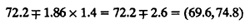

| Previous | Table of Contents | Next |

Confidence intervals for other parameters can be similarly calculated and are shown in Table 21.7. From the table we see that all three cache alternatives are significantly different from the average. All workloads, except TECO, are similar to the average and hence to each other.
Using the formula for contrasts, we can also compare the caching alternatives in pairs. The confidence intervals for the differences of effects are shown in Table 21.8. From this table, we see that two-cache and one-cache alternatives are both significantly better than a no-cache alternative. However, there is no significant difference between two-cache and one-cache alternatives.
| TABLE 21.8 Confidence Intervals for Differences of Cache Effects | |||
|---|---|---|---|
| Two Caches | One Cache | No Cache | |
| Two caches | (-7.4, 5.4)a | (-69.0, -56.2) | |
| One cache | (-68.0, -55.2) | ||
a Not significant. | |||
| TABLE 21.9 Processor Time for Cache Comparison Study in Multiprocess Environment | |||
|---|---|---|---|
| Workload | Two Caches | One Cache | No Cache |
| ASM5 | 231 | 262 | 489 |
| TECO5 | 300 | 314 | 620 |
| SIEVE5 | 213 | 214 | 604 |
| DHRYSTONE5 | 245 | 263 | 564 |
| ALL | 229 | 242 | 551 |
| TABLE 21.10 Confidence Intervals for Differences for Cache Comparison Study in Multiprocess Environment | |||
|---|---|---|---|
| Two Caches | One Cache | No Cache | |
| Two caches | — | (-51.6, 20.8)a | (-358.2, -285.8) |
| One cache | — | — | (-342.8, -270.4) |
a Not significant. | |||
The multiplicative models discussed earlier in Section 18.8 on 22r designs can also be used in the analysis of two-factor experiments. In the analysis presented so far, the following additive model was assumed:
yi = µ + αj + βi + eij
This model assumes that the effect of the factors are additive. It was argued in Section 18.8 that in many cases such as those involving processors and workloads, the effects are multiplicative rather than additive. In such cases, the log of the response follows an additive model. A need for logarithmic transformation is also indicated if the spread in the residuals increases with the mean response.
The following example illustrates a case where the multiplicative model (or log transformation) is useful.
An analysis using an additive model (see Exercise 21.1) would conclude that there is no significant difference among the processors. This is clearly counterintuitive since it is easily seen from the data that Scheme86 is roughly two to three times faster than Spectrum125 for all workloads. (This was expected since Scheme86 has three execution units). Also, notice that Spectrum62.5 is twice as fast as Spectrum125. The reason for the misleading conclusion is that the right model for this problem is a multiplicative model. Also, statistically it is not appropriate to add observations that vary as much as those shown in Table 21.11. The ratio of ymax/ymin is over three orders of magnitude.
To analyze this data, we take a log of the execution times. Computation of effects using the transformed data is shown in Table 21.12 and the ANOVA is shown in Table 21.13. Notice that the effect of the processors is significant. The model explains 99.9% of the variation as compared to 88% in the additive model.
| Previous | Table of Contents | Next |